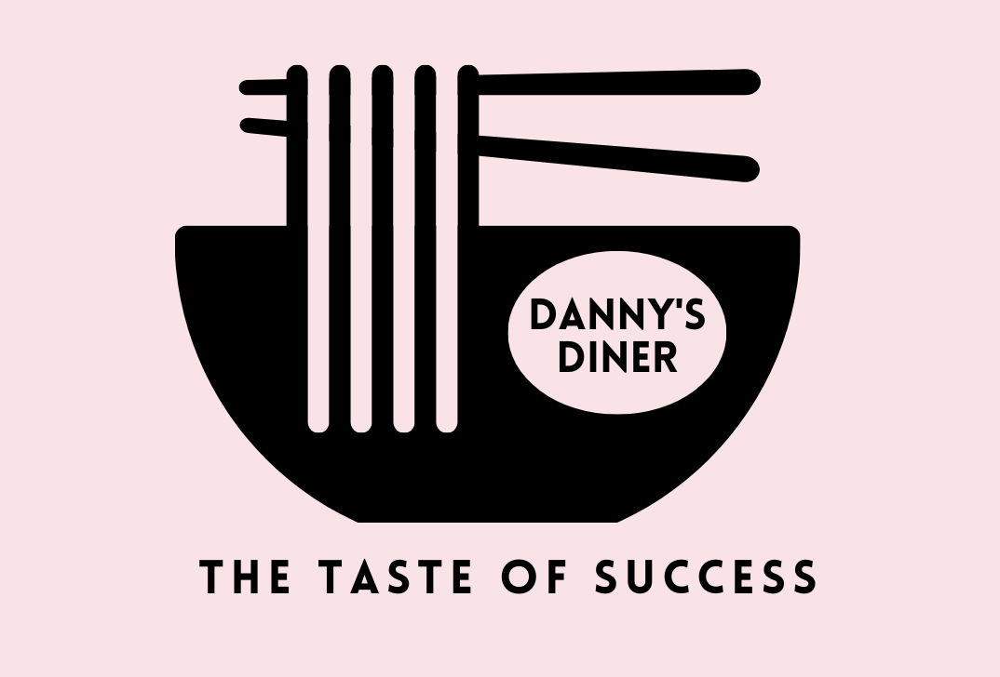

Danny's Diner
In this SQL restaurant project, I leveraged my expertise in MySQL DBMS to answer questions about customers’ visiting patterns, how much money they spent and also which menu items were their favourite. I also utilised my SQL skills to improve data management and streamline operations thus contributing to the restaurant’s success.
Ames Housing Dataset: Data Preparation, EDA & Regression
Leveraged my expertise in Python to identify and address data efficiency issues through data cleaning, investigated the various housing features through visualisations like box plots, density plots, count plots. And finally, built a linear regression model to predict house prices in the Ames,Iowa real estate market.

Cohort Retention Analysis
Leveraged my expertise in Tableau to understand customer engagement over time. Created calculated fields for metrics such as retention rate to explore various dimensions and measure user behaviour more accurately. The goal of this project’s findings was to optimise customer retention efforts.

Exploring Revenue Trends
Leveraged my expertise in Tableau to build a dashboard that consisted of interactive visualisations of revenue variation by month, state, region, age, and category. This made it easier to identify seasonal patterns, sales peaks, and potential areas for improvement. This project showcased my proficiency in effectively employing various Tableau charts.

HR Analytics: Employee Attrition
Leveraged my expertise in Microsoft Excel to visualise and analyze employee turnover trends.Calculated attrition rates using excel functions, conducted segmentation analysis based on employee attributes, and performed trend analysis to identify any significant changes in attrition patterns.
{kind=link}